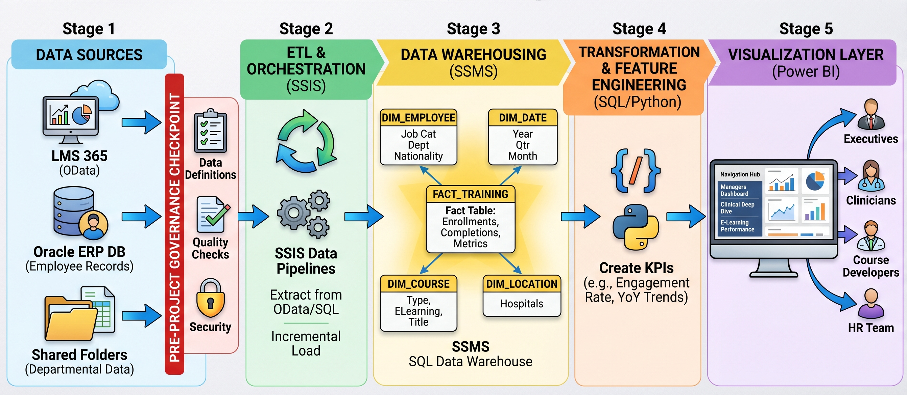
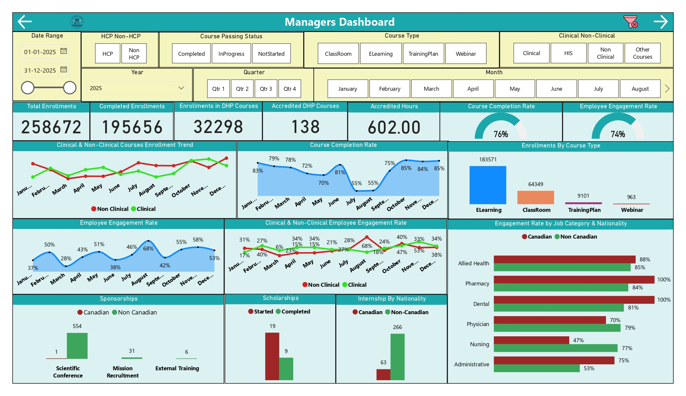
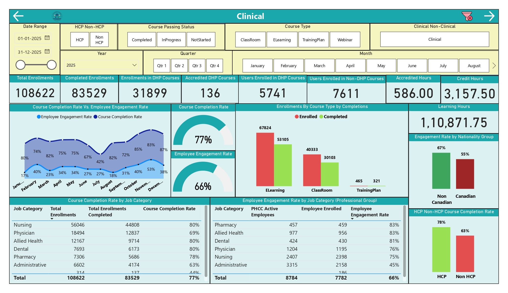
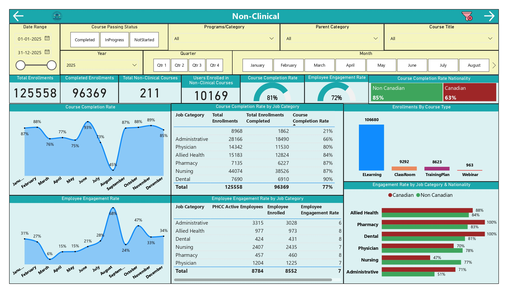
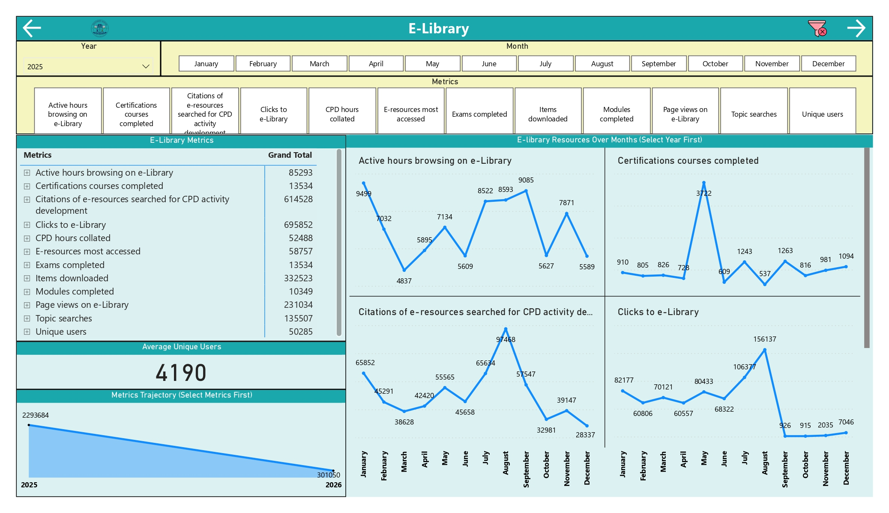
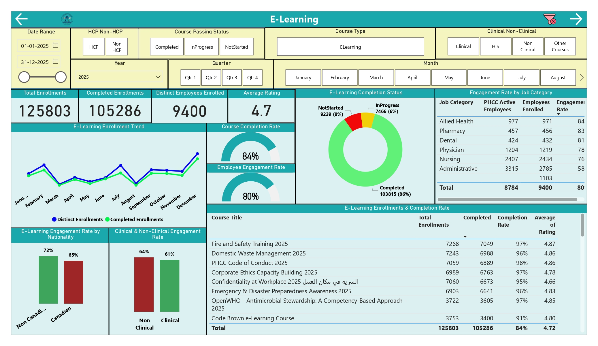
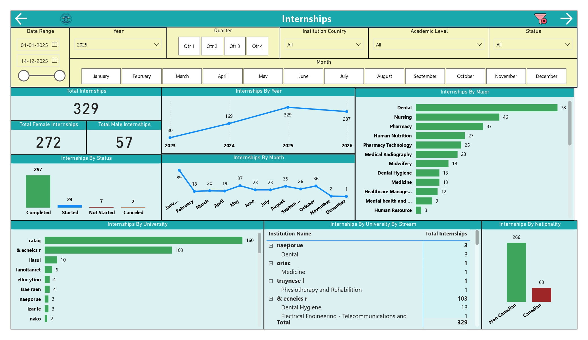
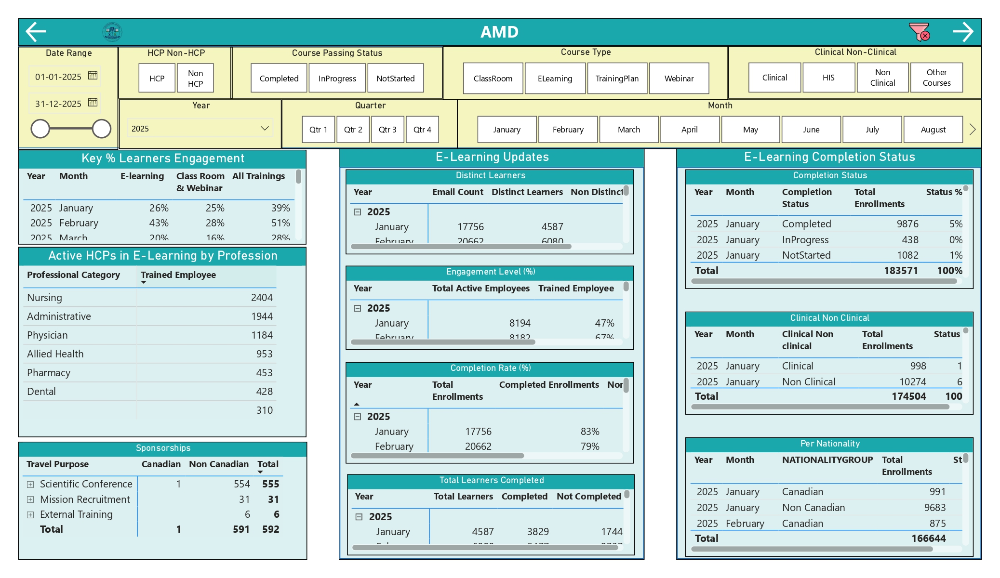
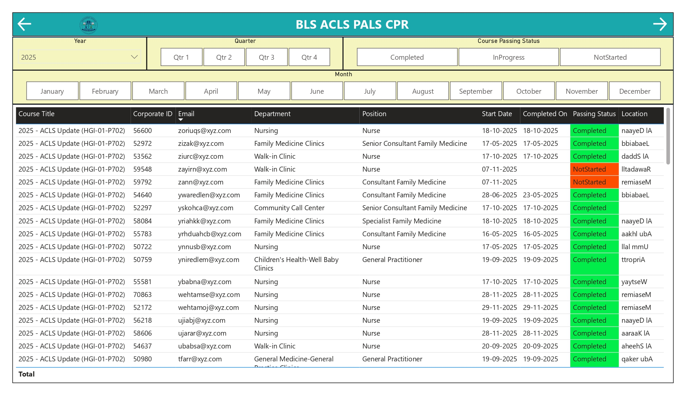
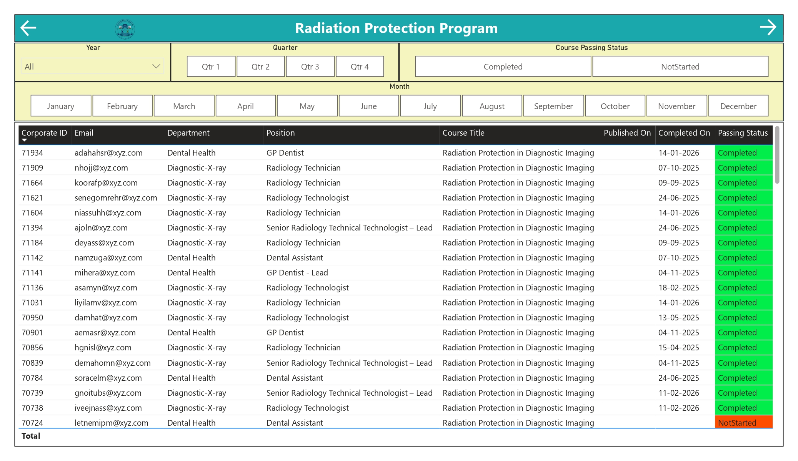

Data Volume Constraints
Direct LMS 365 OData payloads were too large for Power BI to process efficiently, limiting analysis to a single year at a time.
Centralized LMS 365, Oracle ERP, and departmental training data into an automated SSIS and SQL Server warehouse with a seven-page Power BI suite supporting workforce development, clinical learning, compliance, and executive decision-making.
A major government hospital corporation needed to manage the complete training lifecycle for more than 9,500 clinical and non-clinical employees, but its existing reporting environment could not scale.
Direct LMS 365 OData payloads were too large for Power BI to process efficiently, limiting analysis to a single year at a time.
Simultaneous live connections to LMS, Oracle ERP, and flat files caused long load times, slow analysis, and frequent report crashes.
Year-over-year analysis required manual comparison of separate reports because current and historical data could not be loaded together.
Academic Affairs, E-Learning, Clinical, and Non-Clinical teams maintained separate views, preventing corporate-wide compliance oversight.
A governed SSIS and SQL Server enterprise warehouse replaced brittle live-source dependencies with automated, incremental, and performance-optimized analytics.
Standardized metric definitions, assigned data ownership, and mapped security controls for Oracle ERP data containing PII.
Extracted LMS OData, Oracle ERP, and shared-folder files into an isolated SQL Server landing schema.
SSIS cleansed, deduplicated, and mapped Oracle employee master data to LMS training transactions.
Delta logic fetched only new or modified records, bypassing source-volume limitations.
Built a central training fact table with conformed employee, date, course, organization, and location dimensions.
Advanced DAX supported corporate trends, compliance, clinical learning, non-clinical training, Academic Affairs, and E-Learning.
Failed source or warehouse tasks generated error files routed to a common troubleshooting destination.
Millions of training enrollments were consolidated into a trusted enterprise view for leadership.
Minutes-long loading and frequent crashes were replaced by fast historical reporting.
Leadership could redesign training deployment schedules around the seasonal decline.
Mandatory certification monitoring became available across multiple hospital branches.
Fire and Safety Training 2025 achieved a 97% completion rate with a 4.87/5 rating.
Nursing was identified as the highest-volume clinical learning group.
Both directorates maintained an 80% course completion rate.
Academic Affairs reporting validated Dental and Nursing internship pipelines and institutional MoUs.

The documented five-stage architecture connects LMS 365, Oracle ERP, and departmental files to SSIS orchestration, a SQL Server star schema, KPI engineering, and role-based Power BI reporting.
Separate Foreach loops process LMS, Oracle, and shared files
OData, SQL, Excel, and CSV records
Clean, deduplicate, and map employee training records
Consolidate into WFTD_Data_Warehouse
Deliver compliance and workforce intelligence
Failed source or warehouse tasks create error files routed to a centralized destination for logging and troubleshooting.









Replace this placeholder with the public Power BI embed URL after publishing the report.
The repository contains project documentation, SSIS workflow details, screenshots, and implementation context.
Discover more healthcare analytics and enterprise data transformation projects.